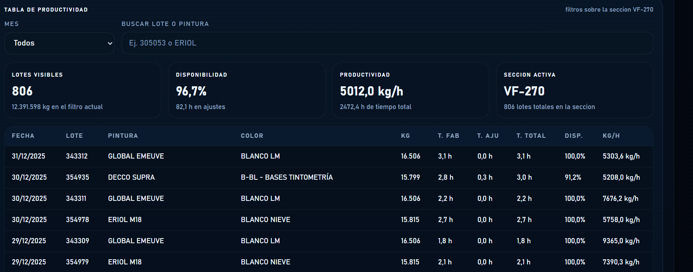

I developed a web dashboard based on productivity data from each manufacturing plant. The images shown correspond to the water plant, VF270 section, full year 2025.
To build it, the first step was to design a reading process for the Excel file coming from the ERP, extracting information from its two main sheets: production and packaging. This process transforms the data into an intermediate JavaScript file (dashboard-data.js), where the information is structured and prepared for visualization.
From these data, I developed the dashboard interface in dashboard.js and its visual style in dashboard.css. The objective was to replicate an aesthetic similar to that of an MES system (such as the one currently being evaluated from MAPEX), but adapted to our current needs and to the real structure of our production sections.
The result is a compact panel that includes:



The main improvement is the possibility of visualizing all plants within a single dashboard, incorporating a dropdown to select the machine or line (for example: VF-270, VF-75, VF-50, DLD8000-1, DLD8000-2, Pasta, etc.). By changing the selection, the content is recalculated automatically, allowing each section to be analyzed dynamically in real time.
At a functional level, the dashboard calculates key metrics such as:
In addition, it includes filters by month and search by batch or paint, which makes it not only a visual panel, but also an operational analysis tool.
In summary, a productivity Excel file has been transformed into an interactive, visual and reusable dashboard, designed to consult the performance of any plant section from a single screen.
To calculate the OEE of a manufacturing line correctly, the fundamental element is data quality. At present, this is our main challenge: the data does not always exist, is not captured or is not reliable. That is why we are working to improve its collection and structuring.
The required data are grouped into three pillars:
It allows us to know how much time the line was actually producing compared with planned time.
It is necessary to capture:
It measures whether the line has worked at the expected speed.
It requires:
In our case, this point is especially complex because the same line works with different formats, different viscosities, varied colors, and mixing times and product changes. Therefore, it is necessary to define an ideal speed by format or product family, based on historical data (maximum one year) and properly weighted.
It evaluates what share of production is valid the first time.
It is necessary to measure:
Damaged containers
Reworked batches
Many of these data are currently not collected, or are not recorded in a structured and reliable way, especially in areas such as breakdowns, auxiliary times or waiting periods.